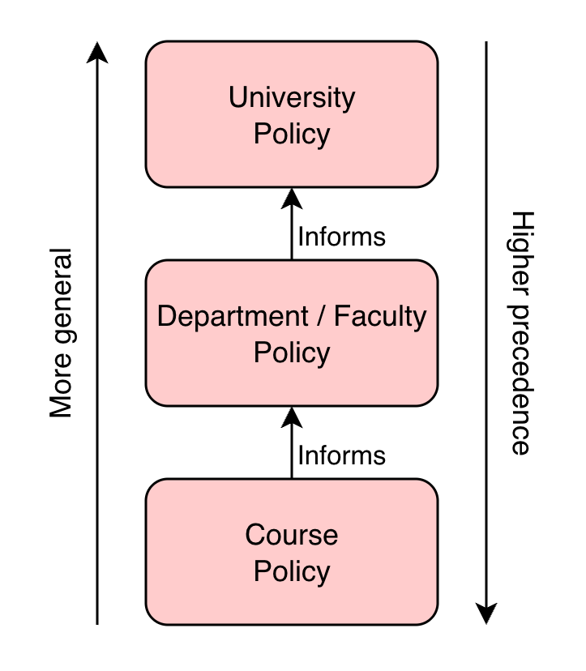

A Policy Framework for GenAI in Education
AI Disarmament
A simple framework for governing Generative AI in university education while preserving learning objectives and academic integrity.
What is Generative AI?
Generative AI (GenAI) refers to tools like ChatGPT, Claude, or Gemini, that can produce human-like text, audio and video based on user prompts. The systems are trained on large data sets and are capable of producing essays, code or solutions to problems in seconds.
Tasks that once required critical thinking and some base level of effort can now be completed with a single prompt, posing issues for Academic Integrity.
Overreliance on such tools weaken learning; students may produce work without fully understanding it.
In the worst case, students graduate without developing foundational knowledge and skills within their discipline, leading to Degree Devaluation.
Pillars for GenAI Policy Development
Derived from research and professor interviews.
- Not just another calculator. GenAI has real implications for learning that demand our attention.
- Context Matters. Course structure, content, and learning objectives set the policy.
- Policy must evolve. GenAI continuously evolves; policy should too.
- Do No (Educational) Harm. If GenAI use impedes learning, then that use is harmful. The inverse is not necessarily true.
- Governance is more than regulation. It’s also policy, (dis)incentives, and education.
- Profs, not cops. Professors prefer teaching to policing.
Bottom-Up Policy Development
Policies should differ by course, and course-specific policies should be set by the professors that teach them. Policies at the departmental / faculty level would follow.
Professors best understand the GenAI-student dynamics at play, and professors are least likely to have interests that conflict with maximizing student development.

Course Specific Policies: A Recipe
What does a course-specific policy look like?
Student Expectations
- What degree of use is allowed?
- When is use considered academic misconduct?
- How should use be disclosed / cited?
- How well are students expected to understand and navigate the bias and privacy concerns associated with GenAI?
Professor Expectations
- How might the professor employ GenAI tools within the course?
- What strategies might the professor employ to dissuade the use of GenAI?
- Prevention Measures (physical, cognitive)
- Verification Measures
GenAI Prevention Measures
Derived from research and professor interviews.
Prevention Measures aim to dissuade the use of GenAI in assignments by either altering the mechanism of delivery (physical prevention) or by altering the nature of the assignment (cognitive prevention).
Examples of physical prevention include making assignments in-person, requiring work to be handwritten, or replacing assignments entirely with quizzes or presentations.
Examples of cognitive prevention include making assignments more personal or reflective in nature, requiring more real world interaction (e.g. interviews), and adjusting assignment scope until they are too specific / broad for GenAI to tackle.
Prevention measures generally alter evaluation tools in some way - select measures that preserve the learning objectives and outcomes.
GenAI Detection Measures
Derived from research and professor interviews.
Detection Measures aim to identify the use of GenAI in a submitted assignment. Detection via a GenAI detection tool is unreliable, and detection via the identification of LLM “hiccups” aren’t guaranteed to work forever.
Some detection measures might call on the student to demonstrate their understanding of a topic or their ownership of some work (e.g. via an oral defense). Effectiveness aside, these approaches raise equity concerns and follow a “guilty until proven innocent” principle that is difficult for some to accept.
Generally, prevention measures are preferred over detection measures (recall pillars 5 & 6). In any case, an expectation of what measures might be employed should be included in the GenAI policy of a course outline.
A Positive Spin
A speculative framing of the GenAI epidemic.
Some of the most common complaints of the classic western university education system have to do with the requirement to produce large amounts of work. Some argue that quantity is demanded over quality, and the result is a university experience that is an exercise in discipline over creativity.
Suddenly, with the advent of GenAI, a student’s ability to keep up with piles of work is made much easier. The ability to scrape by an undergrad program by delegating all work to GenAI, to ultimately graduate with Cs, is already being exploited today.
The solution may require a re-work of the education system. A re-prioritizing of values such as discipline and creativity, which may ultimately lead to a more meaningful university experience for all.